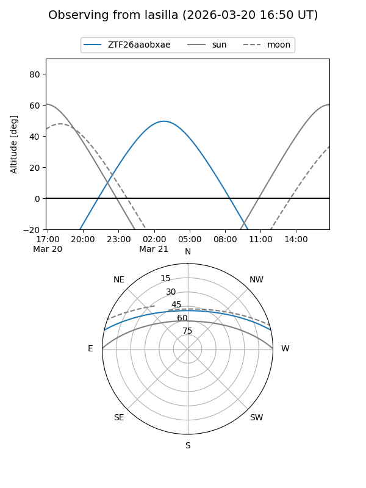
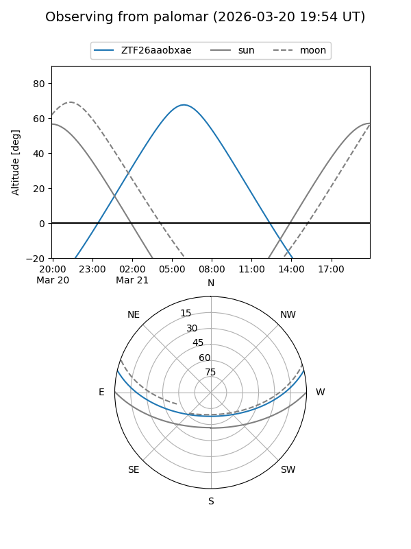

ZTF26aaobxae
Target ZTF26aaobxae at 2026-03-21 08:56
Aliases and brokers:
FINK: link
Lasair: link
ALeRCE: link
alt names
ZTF26aaobxae (ztf,fink_ztf)
Coordinates:
equatorial (ra, dec) = 150.0651,+11.20273
equatorial (HMS+DMS) = 10:00:15.61,+11:12:09.82
galactic (l, b) = (226.0510,+46.82063)
Flags:
Photometry:
last ztfg=19.89
1 ztfg detections
Lightcurve
Visibility


Additional plots